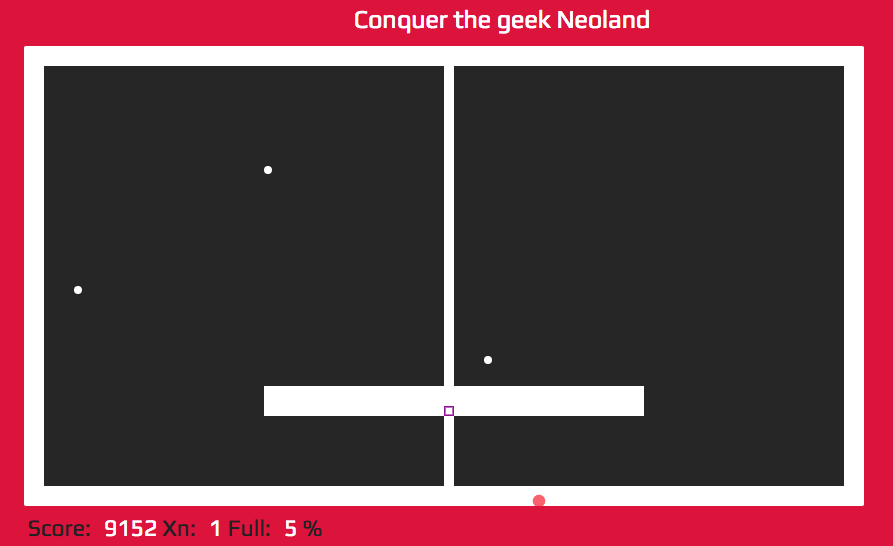

- Simple but Adictive -
- BE A PRO -
Conviértete en un experto en el Xonix Pro Revolution 2018.
AMENAZAS: Progresar en el juego y superar pantallas para conseguir el máximo de puntuación, Evitando que las amenazas y errores nos quiten las vidas.
TIEMPO: Progresar en el juego y superar pantallas para conseguir el máximo de puntuación, Evitando que las amenazas y errores nos quiten las vidas.

- KEYBOARD GAMING -
JUEGO se juega con cursores tradicionales. La sensibilidad y cordinación de los dedos es muy importante para mejorar en la destreza. Recomendamos los diferentes Keyboard Gaming que hay en el mercado. Son ergonómicos y la sensibilidada esstá muy conseguida.
- BOOTCAMP 2018 -
- REVISION 2018 & ADAPTED BY CIO G. NEOLAND BOOTCAMP -
HTML5 VERSION CREATED BY YAIR LEVINSON AND ROEI OVED @ 2012 ORIGINAL DOS VERSION CREATED BY ILAN RAV AND DANI KATZ @ 1984